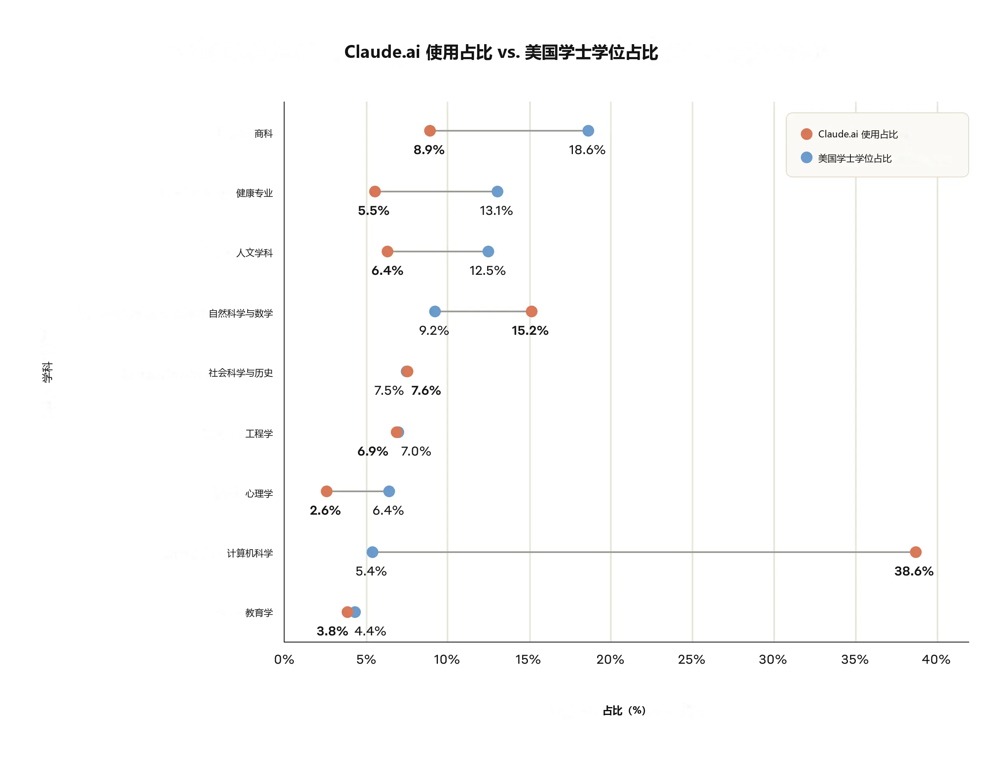
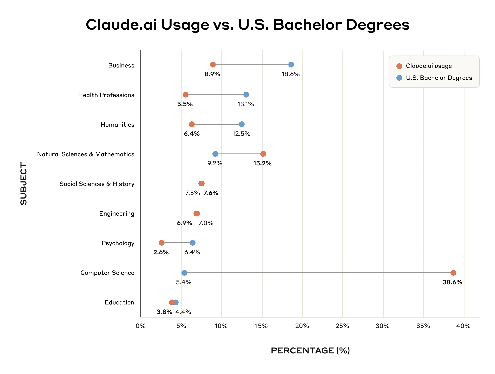
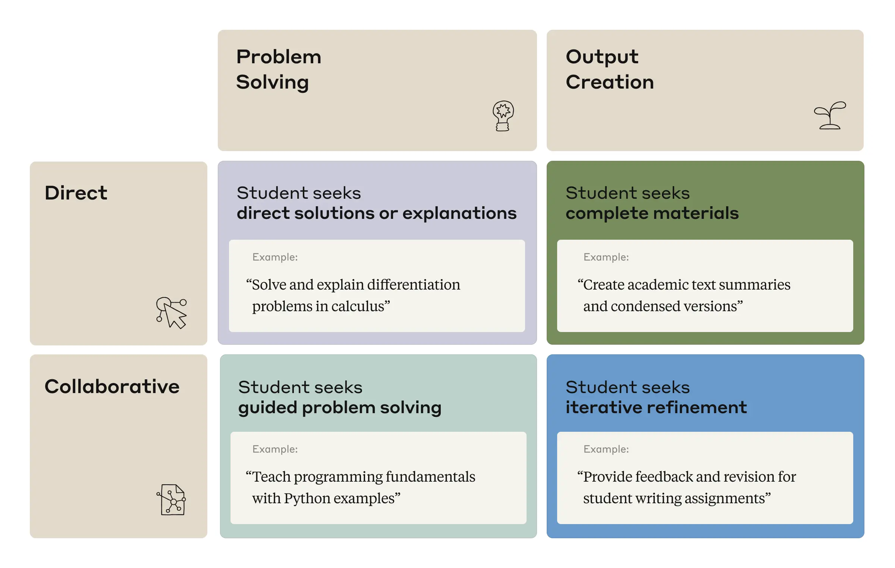
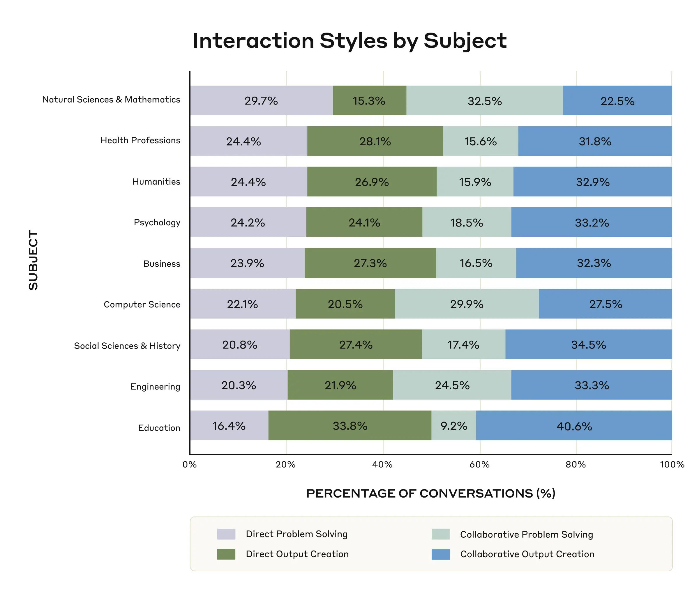
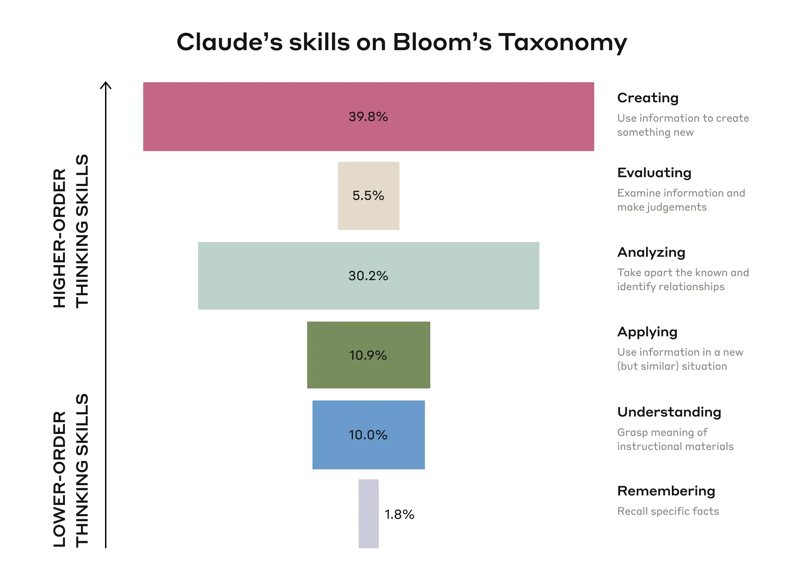

Anthropic 教育报告：大学生如何使用 Claude
📖 中文摘要
专业术语注解
Clio：在保护隐私前提下把海量Claude对话浓缩为高层使用摘要的自动化分析工具布鲁姆分类学：把认知过程由简单到复杂分为记忆、理解、应用、分析、创造等层级的教育框架直接式与协作式：按用户是尽快求答案还是主动与模型展开对话区分的两种互动模式认知外包：学生把本应自己完成的高阶思考任务交给AI完成的隐忧NCES学科分类：美国国家教育统计中心的学科领域划分，用于把对话映射到专业📄 中文全文
- 类别： 社会影响（Societal Impacts）
- 来源： https://www.anthropic.com/research/anthropic-education-report-how-university-students-use-claude
社会影响（Societal Impacts） 2025 年 4 月 8 日 发布于 2025 年 4 月 8 日 团队 社会影响 主题
相关文章 * 产品 2026 年 7 月 9 日 介绍一种反思你如何使用Claude的方式
阅读更多 AI系统不再只是专门的研究工具：它们已成为日常的学业伴侣。随着AI更深入地融入教育环境，我们需要思考关于学习、评估与技能培养的重要问题。迄今为止，大多数讨论依赖问卷调查和受控实验，而非学生如何在真实场景中自然地把AI融入学业的直接证据。 为填补这一空白，我们开展了首批针对高等教育中真实AI使用模式的大规模研究之一，分析了Claude.ai上100万段匿名学生对话。 我们这份教育报告的主要发现如下： * STEM（科学、技术、工程、数学）学生是Claude等AI工具的早期采用者，其中计算机科学学生的占比尤其突出（占学生对话的36.8%，而仅占美国学位的5.4%）。相比之下，商科、健康与人文学科学生的采用率相对于其入学人数偏低。 * 我们识别出学生与AI互动的四种模式，每种模式在数据中出现的比例大致相当（各占对话的23–29%）：直接式问题解决（Direct Problem Solving）、直接式成果创作（Direct Output Creation）、协作式问题解决（Collaborative Problem Solving）与协作式成果创作（Collaborative Output Creation）。 * 学生主要把AI系统用于创造（creating，利用信息学习新事物）与分析（analyzing，拆解已知内容并识别其间关系），例如创建编程项目或分析法律概念。这与布鲁姆分类学（Bloom's Taxonomy）中的高阶认知功能相吻合。这引发了如何确保学生不把关键认知任务外包给AI系统的问题。
识别教育场景中的AI使用
研究人们如何使用AI模型时，保护用户隐私至关重要。在本项目中，我们使用了Claude Insights and Observations，即“Clio”——我们的自动化分析工具，可揭示人们如何使用Claude。Clio通过把用户对话提炼为高层级的使用摘要（如“排查代码错误”或“解释经济学概念”），实现对AI使用模式的自下而上发现。Clio采用多层次的自动化流程，从对话中移除用户的私人信息。我们设计这一流程，是为了尽量减少从一层传递到下一层的信息。我们在这篇早前的博客中介绍了Clio隐私优先的设计。 我们使用Clio分析了约100万段匿名化1对话，这些对话来自与高等教育邮箱地址绑定的Claude.ai Free与Pro账户。2随后我们按学生与学术相关性筛选这些对话——例如对话是否涉及课程作业或学术研究——得到574,740段对话。3接着Clio对这些对话分组，得出汇总的教育相关洞见：不同学科如何分布、学生与AI的互动有何差异，以及学生把哪些类型的认知任务委托给AI系统。
学生用AI做什么？
我们发现，学生主要用Claude创建和改进各学科的教育内容（占对话的39.3%）。这通常包括设计练习题、修改论文或总结学术材料。学生也经常用Claude为学业作业提供技术解释或解答（33.5%）——借助AI调试和修复编程作业中的错误、实现编程算法与数据结构，以及解释或求解数学问题。其中一部分使用也可能属于作弊，我们将在下文讨论。另有规模较小但仍相当可观的一部分学生使用，用于分析与可视化数据（11.0%）、支持研究设计与工具开发（6.5%）、绘制技术图表（3.2%），以及在不同语言之间翻译或校对内容（2.4%）。
下面是各学科常见请求的更详细分解。
 排名前四学科领域的常见学生请求，基于Clio在每个学科内统计的15个最频繁请求。
排名前四学科领域的常见学生请求，基于Clio在每个学科内统计的15个最频繁请求。
各学科的AI使用情况
接下来，我们考察了哪些学科的Claude使用_不成比例_。做法是把Claude.ai的使用模式与美国授予的学士学位数量进行对比。4Claude使用最不成比例地偏高的学科是计算机科学：尽管仅占美国学士学位的5.4%，计算机科学却占Claude.ai上对话的38.6%（这可能反映出Claude在计算机编程方面的特长）。自然科学与数学在Claude.ai中的占比也高于其学生入学人数占比（分别为15.2%对9.2%）。 相反，商科相关的教育对话尽管占学士学位的18.6%，却只占对话的8.9%，显示出Claude使用不成比例地偏低。健康专业（5.5%对13.1%）与人文学科（6.4%对12.5%）相对于这些学科的学生入学人数，占比也偏低。 这些模式表明，STEM学生、尤其是计算机科学专业的学生，可能更早把Claude用于教育目的，而商科、健康与人文学科的学生把这些工具融入学业流程的速度可能更慢。这或许反映出计算机科学社群对Claude的认知度更高，也反映出AI系统相对于其他学科学生所从事的任务，更擅长STEM学生所执行的任务。

把与某个美国国家教育统计中心（NCES）学科领域相关的Claude.ai学生对话百分比（灰色）与拥有对应专业的美国大学生百分比（橙色）进行比较。请注意，百分比之和不为100%，因为部分对话被归入NCES的“其他”类别，而我们已在分析中将其排除。学生如何与AI互动
与AI互动的方式有很多，它们对学习过程的影响各不相同。在分析学生如何与AI互动时，我们识别出四种截然不同的互动模式，并沿两条不同的轴线对其分类，如下图所示。 第一条轴线是“互动模式”。它可能包括：5（1）直接式（Direct）对话，用户希望尽快解决自己的问题；（2）协作式（Collaborative）对话，用户主动寻求与模型展开对话以达成目标。第二条轴线是互动的“期望成果”。它可能包括：（1）问题解决（Problem Solving），用户寻求问题的解答或解释；（2）成果创作（Output Creation），用户希望产出较长的成果，如演示文稿或论文。把两条轴线组合起来，就得到下文呈现的四种模式。 我们针对学生与AI对话的分类体系，以及基于Clio所浮现话题的示例对话主题。 这四种互动风格出现的比例相近（各占对话的23%至29%），体现出学生对AI用途之广。传统网络搜索通常只支持直接给出答案，而AI系统能支持种类丰富得多的互动，并随之带来新的教育机遇。我们挑选的一些正面学习示例包括： * 解释并厘清哲学概念与理论 * 创建全面的化学教育资源与学习材料 * 为学业作业解释肌肉解剖学、生理学与功能概念
与此同时，AI系统也带来新的挑战。一个常见的问题是：“学生有多少程度在用AI作弊？”这很难回答，尤其因为我们并不知道Claude每段回应被使用时的具体教育情境。例如，一段直接式问题解决的对话，可能是在带回家完成的考试中作弊……也可能是一名学生在对照练习题核对自己的答案。一段直接式成果创作的对话，可能是从零开始写一篇论文……也可能是为额外的研究整理知识摘要。一段协作式对话是否构成作弊，还可能取决于具体的课程政策。 尽管如此，近一半（约47%）的学生与AI对话属于直接式——即以最少的互动寻求答案或内容。虽然其中许多服务于正当的学习目的（如提出概念性问题或生成学习指南），我们确实发现了一些令人担忧的直接式对话示例，包括： * 提供机器学习选择题的答案 * 提供英语语言测试题目的直接答案 * 改写营销与商业文本以规避抄袭检测
这些引发了关于学术诚信、批判性思维技能的培养，以及如何最好地评估学生学习的重要问题。即便是协作式对话，也可能产生可疑的学习效果。例如，__“带解释地求解概率与统计作业题”可能在AI与学生之间包含多轮对话，但仍把大量思考外包给AI。我们将继续研究这些互动，并努力更好地区分哪些有助于学习、培养批判性思维。
各学科特有的AI使用模式
不同学科的学生以不同方式使用AI： * 自然科学与数学对话倾向于问题解决，例如“用逐步计算求解具体的概率题”和“用逐步讲解求解学业作业或考试题”。 * 计算机科学、工程与自然科学与数学更偏向协作式对话，而人文学科、商科与健康在协作式与直接式对话之间的分布更为均衡。 * 教育学对成果创作表现出最强的偏好，占对话的74.4%。不过，这种使用可能源于我们筛选方法的不完善。其中许多对话涉及“创建全面的教学材料与教育资源”和“创建详细的教案”，表明教师也在把Claude用于教育支持。总体而言，教育学占全部对话的3.8%。
这表明，把AI融入教育的做法若能因学科而异，可能会更有成效。我们的数据是帮助认识不同学科学生使用AI方式差异的第一步。
 各NCES学科中对话在互动风格上的分布。
各NCES学科中对话在互动风格上的分布。
学生委托给AI的认知任务
我们还探究了学生如何把认知职责委托给AI系统。我们采用了布鲁姆分类学（Bloom's Taxonomy），6这是教育领域用于把认知过程从简单到复杂加以分类的层级框架。尽管该框架最初针对的是学生的思维，我们对其加以调整，用于分析Claude在与学生对话时的回应。 我们看到AI呈现出的布鲁姆分类学领域呈倒置分布： * Claude主要在完成高阶认知功能，其中创造（Creating，39.8%）与分析（Analyzing，30.2%）是布鲁姆分类学中最常见的操作。 * 低阶认知任务较少见：应用（Applying，10.9%）、理解（Understanding，10.0%）与记忆（Remembering，1.8%）。
这一分布也随互动风格而变化。正如预期，成果创作类任务（如生成学术文本摘要或论文反馈）涉及更多创造功能；问题解决类任务（如求解微积分题或讲解编程基础）涉及更多分析功能。
AI系统展现出这些技能，并不排除学生自己也运用这些技能——例如共同创作一个项目，或在另一情境下用AI生成的代码分析数据集——但这确实指向学生把认知能力外包给AI的潜在隐忧。有理由担心，AI系统可能成为学生的拐杖，抑制支撑高阶思维所需基础技能的培养。毕竟，一座倒置的金字塔是会倾倒的。
 Claude在与学生对话中展现的认知技能，基于布鲁姆分类学。技能描述来自佛罗里达大学教学技术培训中心。
Claude在与学生对话中展现的认知技能，基于布鲁姆分类学。技能描述来自佛罗里达大学教学技术培训中心。
局限性
我们的研究立足于真实世界的数据。就研究结论的有效性及其在教育情境中的适用性而言，这带来诸多优势。但它也附带一些可能影响结论适用范围的局限： * 我们的数据集很可能捕捉到的是早期采用者，未必能代表更广泛的学生群体； * Claude的使用相对于教育领域整体AI使用有多大的代表性尚不清楚——许多学生使用Claude.ai之外的AI工具，这意味着我们只呈现了他们整体AI使用模式的部分图景； * 对话分类中很可能同时存在假阳性与假阴性。我们依赖的是与高等教育邮箱地址绑定的账户中的对话：其中一些被分类器判定为与学生相关的对话，实际上可能来自员工或教职人员。此外，另一些学生对话很可能来自与非大学邮箱地址绑定的账户； * 出于隐私考虑，我们只分析单个18天保留窗口内的Claude.ai使用情况。随着学业任务在一年中的起伏，学生的使用很可能有所不同； * 我们只研究学生把哪些任务委托给AI，而不研究他们最终如何在学业中使用AI输出，也不研究这些对话是否切实支持学习成果； * 把学生与AI的对话归入各学科，可能无法充分涵盖AI使用模式可能显著不同的跨学科工作； * 把布鲁姆分类学应用于AI（而非学生）的认知过程并不完善。像记忆这样的技能，在AI系统的情境中更难量化。
各机构关于教育中使用AI的政策差异很大，可能以我们在这份数据集中无法衡量的方式显著影响所观察到的模式。
结论与展望
我们的分析为学生在真实世界中于何处、以何种方式使用AI提供了一幅鸟瞰图。我们认识到，对AI影响教育的理解才刚刚起步。 在与学生和教育者的交流中，我们看到AI能以非凡的方式赋能学习。例如，AI已被用于支持一名学生的核聚变反应堆项目，并促进课堂上师生之间更好的沟通。 但我们并不幻想这些初步发现能全面回答教育领域正在发生的深刻变化。AI正以各种方式让教育者的工作更富挑战，而本研究并未充分涵盖这些。随着学生把高阶认知任务委托给AI系统，一些根本性问题随之浮现：我们如何确保学生仍培养起基础的认知与元认知技能？在AI普及的世界里，我们如何重新定义评估与反作弊政策？如果AI系统能近乎即时地生成润色好的文章，或迅速解出一个人需要数小时才能完成的复杂问题，那么有意义的学习会是什么样子？随着模型能力增长、AI更深地融入我们的生活，从作业设计到评估方法的一切是否都会发生根本性转变？ 这些发现为教育者、管理者与政策制定者之间关于如何确保AI深化而非削弱学习的持续讨论提供了素材。进一步的研究将帮助我们更好地理解学生与教师双方如何使用AI、其与学习成果的关联，以及对教育未来的长期影响。
Anthropic的教育方针
除这份教育报告外，我们还正与大学合作，以更好理解AI在教育中的角色。作为早期一步，我们正在试验一种“学习模式”（Learning Mode），它强调苏格拉底式方法与概念理解，而非直接给出答案。我们期待与大学合作开展未来的研究，并更直接地研究AI对学习的影响。
脚注
01 这些对话跨越Claude.ai上一个18天的时段，以便继续依照我们的隐私与保留政策管理数据。关于Clio如何保护隐私的更多信息，请参阅我们的研究博客。 02 具体而言，我们把分析限定在全球范围内与高等教育机构相关联的邮箱地址账户，例如.edu与.ac.uk域名的邮箱。我们认识到，并非所有教育邮箱地址都属于学生。为此，我们随后把相关对话筛选为那些可能涉及学生课业的对话。 03 Clio使用Claude以自动化方式筛选对话。在本研究中，Clio把对话筛选为“很可能是一名学生在寻求学业、课业、学习、学习新概念、学术研究等方面的帮助？”的对话。我们此前关于Clio的论文详述并验证了这一筛选机制。 04 经由美国国家教育统计中心（NCES）。 05 在实验中，我们使用“事务式”（Transactional）与“对话式”（Dialogic）这两个术语来分类对话，因为我们发现它们最精准地捕捉了Clio所浮现的自下而上的互动模式。具体地说，我们用Clio把对话归为以下之一：事务式问题解决、事务式成果创作、对话式问题解决或对话式成果创作；每种互动模式都配有相应的描述提供给Clio。为便于理解，本报告用“直接式”与“协作式”代替“事务式”与“对话式”。 06 具体而言，我们采用Anderson与Krathwohl（2001）的修订版布鲁姆分类学，以及他们的认知过程分类体系。
作者与致谢
贡献者
Kunal Handa与Drew Bent设计并执行了实验、绘制了图表并撰写了这篇博客文章。Alex Tamkin提出了最初的实验并提供了详细的指导与反馈。Miles McCain反复完善了所有实验所需的技术基础设施。Esin Durmus、Michael Stern、Mike Schiraldi、Saffron Huang、Stuart Ritchie、Steven Syverud与Kamya Jagadish提供了宝贵的反馈与讨论。Margaret Vo、Matt Bell与Deep Ganguli全程提供了细致的指导、组织支持与反馈。
致谢
此外，我们感谢Rose E. Wang、Laurence Holt、Michael Trucano、Ben Kornell、Patrick Methvin、Alexis Ross与Joseph Feller的有益讨论与评论。
引用格式
@online{handa2025education,
author = {Kunal Handa and Drew Bent and Alex Tamkin and Miles McCain and Esin Durmus and Michael Stern and Mike Schiraldi and Saffron Huang and Stuart Ritchie and Steven Syverud and Kamya Jagadish and Margaret Vo and Matt Bell and Deep Ganguli},
title = {Anthropic Education Report: How University Students Use Claude},
date = {2025-04-08},
year = {2025},
url = {https://www.anthropic.com/news/anthropic-education-report-how-university-students-use-claude},
}
▸ 英文原文（点击展开）
Anthropic Education Report:How university students use Claude
- Date: 2025-04-08
- Category: Copy
- Source: https://www.anthropic.com/research/anthropic-education-report-how-university-students-use-claude
Anthropic Education Report : How university students use Claude
Published Apr 8, 2025 Team Societal Impacts Topics
Related articles * Product Jul 9, 2026 Introducing a way to reflect on how you use Claude
View more AI systems are no longer just specialized research tools: they’re everyday academic companions. As AIs integrate more deeply into educational environments, we need to consider important questions about learning, assessment, and skill development. Until now, most discussions have relied on surveys and controlled experiments rather than direct evidence of how students naturally integrate AI into their academic work in real settings. To address this gap, we’ve conducted one of the first large-scale studies of real-world AI usage patterns in higher education, analyzing one million anonymized student conversations on Claude.ai. The key findings from our Education Report are: * STEM students are early adopters of AI tools like Claude, with Computer Science students particularly overrepresented (accounting for 36.8% of students’ conversations while comprising only 5.4% of U.S. degrees). In contrast, Business, Health, and Humanities students show lower adoption rates relative to their enrollment numbers. * We identified four patterns by which students interact with AI, each of which were present in our data at approximately equal rates (each 23-29% of conversations): Direct Problem Solving, Direct Output Creation, Collaborative Problem Solving, and Collaborative Output Creation. * Students primarily use AI systems for creating (using information to learn something new) and analyzing (taking apart the known and identifying relationships), such as creating coding projects or analyzing law concepts. This aligns with higher-order cognitive functions on Bloom’s Taxonomy. This raises questions about ensuring students don’t offload critical cognitive tasks to AI systems.
Identifying educational AI usage
When researching how people use AI models, protecting user privacy is paramount. For this project, we used Claude Insights and Observations, or "Clio," our automated analysis tool that provides insights into how people are using Claude. Clio enables bottom-up discovery of AI usage patterns by distilling user conversations into high-level usage summaries, such as “troubleshoot code” or “explain economic concepts.” Clio uses a multi-layered, automated process that removes private user information from conversations. We built this process so it minimizes the information that passes from one layer to the next. We describe Clio’s privacy-first design in this earlier blog. We used Clio to analyze approximately one million anonymized1 conversations from Claude.ai Free and Pro accounts tied to higher education email addresses.2 We then filtered these conversations for student and academic relevance—such as whether the conversation pertained to coursework or academic research—which yielded 574,740 conversations.3 Clio then grouped these conversations to derive aggregate education-related insights: how different academic subjects were represented; how students-AI interaction differed; and the types of cognitive tasks that students delegate to AI systems.
What are students using AI for?
We found that students primarily use Claude to create and improve educational content across disciplines (39.3% of conversations). This often entailed designing practice questions, editing essays, or summarizing academic material. Students also frequently used Claude to provide technical explanations or solutions for academic assignments (33.5%)—working with AI to debug and fix errors in coding assignments, implement programming algorithms and data structures, and explain or solve mathematical problems. Some of this usage might also be cheating, which we discuss below. A smaller but still sizable portion of student usage was to analyze and visualize data (11.0%), support research design and tool development (6.5%), create technical diagrams (3.2%), and translate or proofread content between languages (2.4%).
Below is a more detailed breakdown of common requests across subjects.
 Common student requests from the top four subject areas, based on the 15 most frequent requests in Clio within each subject.
Common student requests from the top four subject areas, based on the 15 most frequent requests in Clio within each subject.
AI usage across academic disciplines
We next examined which subjects showed disproportionate use of Claude. We did so by comparing Claude.ai usage patterns with the number of U.S. bachelor's degrees awarded.4 The most disproportionately heavy use of Claude was in Computer Science: despite representing only 5.4% of U.S. bachelor's degrees, Computer Science accounted for 38.6% of conversations on Claude.ai (this might reflect Claude’s particular strengths in computer coding). Natural Sciences and Mathematics also show higher representation in Claude.ai relative to student enrollment (15.2% vs. 9.2%, respectively). Conversely, Business-related educational conversations accounted for just 8.9% of conversations despite constituting 18.6% of bachelor's degrees, showing a disproportionately low use of Claude. Health Professions (5.5% vs. 13.1%) and Humanities (6.4% vs. 12.5%) were also less represented relative to student enrollment in these disciplines. These patterns suggest that STEM students, particularly those in Computer Science, may be earlier adopters of Claude for educational purposes, while students in Business, Health, and Humanities disciplines may be integrating these tools more slowly into their academic workflows. This may reflect higher awareness of Claude in Computer Science communities, as well as AI systems’ greater proficiency at tasks performed by STEM students relative to those performed by students in other disciplines.

Comparing the percentage of Claude.ai student conversations that are related to an National Center for Education Statistics (NCES) subject area (gray) to the percentage of U.S. college students with an associated major (orange). Note that percentages don’t sum to 100% as some conversations were classified under the “Other” category from the NCES which we exclude from our analysis.How students interact with AI
There are many ways of interacting with AI, and they’ll affect the learning process differently. In our analysis of how students interact with AI, we identified four distinct patterns of interaction, which we categorized along two different axes, as shown in the figure below. The first axis was “mode of interaction”. This could involve:5 (1) Direct conversations, where the user is looking to resolve their query as quickly as possible, and (2) Collaborative conversations, where the user actively seeks to engage in dialogue with the model to achieve their goals. The second axis was the “desired outcome” of the interaction. This could involve: (1) Problem Solving , where the user seeks solutions or explanations to questions, and (2) Output Creation , where the user seeks to produce longer outputs like presentations or essays. Combining the two axes gives us the four patterns presented below.

Our taxonomy for student-AI conversations, along with sample conversation topics based on those surfaced by Clio. These four interaction styles were represented at similar rates (each between 23% and 29% of conversations), showing the range of uses students have for AI. Whereas traditional web search typically only supports direct answers, AI systems enable a much wider variety of interactions, and with them, new educational opportunities. Some selected positive learning examples include: * Explain and clarify philosophical concepts and theories * Create comprehensive chemistry educational resources and study materials * Explain muscle anatomy, physiology, and function concepts for academic assignmentsAt the same time, AI systems present new challenges. A common question is: “how much are students using AI to cheat?” That’s hard to answer, especially as we don’t know the specific educational context where each of Claude’s responses is being used. For instance, a Direct Problem Solving conversation could be for cheating on a take-home exam… or for a student checking their work on a practice test. A Direct Output Creation conversation could be for creating an essay from scratch… or for creating summaries of knowledge for additional research. Whether a Collaborative conversation constitutes cheating may also depend on specific course policies. That said, nearly half (~47%) of student-AI conversations were Direct—that is, seeking answers or content with minimal engagement. Whereas many of these serve legitimate learning purposes (like asking conceptual questions or generating study guides), we did find concerning Direct conversation examples including: * Provide answers to machine learning multiple-choice questions * Provide direct answers to English language test questions * Rewrite marketing and business texts to avoid plagiarism detection
These raise important questions about academic integrity, the development of critical thinking skills, and how to best assess student learning. Even Collaborative conversations can have questionable learning outcomes. For example,__ “solve probability and statistics homework problems with explanations,” might involve multiple conversational turns between AI and student, but still offloads significant thinking to the AI. We will continue to study these interactions and try to better discern which ones contribute to learning and develop critical thinking.
Subject-specific AI usage patterns
Students across disciplines engage with AI in different manners: * Natural Sciences & Mathematics conversations tended toward Problem Solving, such as “solve specific probability problems with step-by-step calculations” and “solve academic homework or exam problems with step-by-step explanations.” * Computer Science , Engineering , and Natural Sciences & Mathematics leaned towards Collaborative conversations, whereas Humanities, Business, and Health were more evenly split stronger between Collaborative and Direct conversations. * Education showed the strongest preference for Output Creation, covering 74.4% of conversations. However, this usage might stem from imperfections in our filtering methods. Many of these conversations involved “creat[ing] comprehensive teaching materials and educational resources” and “creat[ing] detailed lesson plans,” indicating that teachers are also using Claude for educational support. In total, Education made up 3.8% of all conversations.
This suggests that educational approaches to AI integration would likely benefit from being discipline-specific. Our data are a first step in helping recognize the variations in how students across subjects engage with AI.

Distribution of conversations across interaction styles for each NCES subject.Cognitive tasks students delegate to AI
We also explored how students delegate cognitive responsibilities to AI systems. We used Bloom's Taxonomy,6 a hierarchical framework used in education to classify cognitive processes from simpler to more complex. While the framework was initially intended for student thinking, we adapted it to analyze Claude’s responses when conversing with a student. We saw an inverted pattern of Bloom's Taxonomy domains exhibited by the AI: * Claude was primarily completing higher-order cognitive functions, with Creating (39.8%) and Analyzing (30.2%) being the most common operations from Bloom’s Taxonomy. * Lower-order cognitive tasks were less prevalent: Applying (10.9%), Understanding (10.0%), and Remembering (1.8%).
This distribution also varied by interaction style. As expected, Output Creation tasks, such as generating summaries of academic text or feedback on essays, involved more Creating functions. Problem Solving tasks, such as solving calculus problems or explaining programming fundamentals, involved more Analyzing functions. The fact that AI systems exhibit these skills does not preclude students from also engaging in the skills themselves—for example, co-creating a project together or using AI-generated code to analyze a dataset in another context—but it does point to the potential concerns of students outsourcing cognitive abilities to AI. There are legitimate worries that AI systems may provide a crutch for students, stifling the development of foundational skills needed to support higher-order thinking. An inverted pyramid, after all, can topple over.

The cognitive skills that are exhibited by Claude in conversations with students, based on Bloom’s Taxonomy. Descriptions of skills from University of Florida’s Center for Instructional Technology and Training.Limitations
Our research is grounded in real-world data. That has many advantages in terms of the validity of our findings and their application to educational contexts. However, it also comes with limitations that might affect the scope of our findings: * Our dataset likely captures early adopters, and might not represent the broader student population; * It's unclear how representative Claude use is relative to overall AI usage in education—many students use AI tools beyond Claude.ai, meaning that we present only a partial view of their overall AI engagement patterns; * There are likely both false positives and false negatives in how conversations were classified. We relied on conversations from accounts tied to higher education email addresses: some of these that were considered to be student-related by our classifier may actually be from staff or faculty members. Furthermore, other student conversations are likely on accounts tied to non-university email addresses; * Due to privacy considerations, we only analyze Claude.ai usage within a single 18-day retention window. Students’ usage likely differs across the year as their educational commitments fluctuate; * We only study what tasks students delegate to AI, not how they ultimately use AI outputs in their academic work or whether these conversations effectively support learning outcomes; * The categorization of student-AI conversations into academic disciplines may not fully capture interdisciplinary work where AI usage patterns may differ significantly; * Applying Bloom’s Taxonomy to the cognitive processes of an AI, as opposed to a student, is imperfect. Skills like Remembering are harder to quantify in the context of AI systems.
Institutional policies regarding AI use in education vary widely, and might significantly impact the patterns we observe in ways we cannot measure within this dataset.
Conclusions and looking ahead
Our analysis provides a bird’s-eye view of where and how students are using AI in the real world. We recognize that we are only at the beginning of understanding AI's impact on education. We've seen in our discussions with students and educators that AI can empower learning in remarkable ways. For example, AI has been used to support a student's nuclear fusion reactor project, and to facilitate better communication between students and teachers in classrooms. But we are under no illusions that these initial findings entirely address the profound changes happening in education. AI is making educators' lives more challenging in all kinds of ways, and this research doesn't fully capture them. As students delegate higher-order cognitive tasks to AI systems, fundamental questions arise: How do we ensure students still develop foundational cognitive and meta-cognitive skills? How do we redefine assessment and cheating policies in an AI-enabled world? What does meaningful learning look like if AI systems can near-instantly generate polished essays, or rapidly solve complex problems that would take a person many hours of work? As model capabilities grow and AI becomes more integrated into our lives, will everything from homework design to assessment methods fundamentally shift? These findings contribute to the ongoing discussions amongst educators, administrators, and policymakers about how we can ensure AI deepens, rather than undermines, learning. Further research will help us better understand how both students and teachers use AI, the connections to learning outcomes, and the long-term implications for the future of education.
Anthropic’s approach to education
In addition to this Education Report, we are partnering with universities to better understand the role of AI in education. As an early step, we are experimenting with a Learning Mode that emphasizes the Socratic method and conceptual understanding over direct answers. We look forward to collaborating with universities on future research studies and more directly studying the effects that AI has on learning.
Footnotes
01 These spanned an 18-day period on Claude.ai to continue managing data according to our privacy and retention policies. For more information about how Clio protects privacy, see our research blog. 02 In particular, we limit the analysis to accounts with email addresses associated with higher education institutions globally, such as emails with .edu and .ac.uk domains. We recognize that not all educational email addresses may be those of students. For this reason, we then filter the associated conversations to those likely addressing students’ schoolwork. 03 Clio uses Claude to filter conversations in an automated way. For this research, Clio filtered conversations to those “likely to be a student seeking help with academics, school work, studying, learning a new concept, academic research, etc?”. Our previous paper on Clio details and validates this filtering mechanism. 04 Via the National Center for Education Statistics (NCES). 05 In our experiments, we used the terminology “Transactional” and “Dialogic” to classify conversations as we found those terms to most precisely capture the bottom-up interaction patterns surfaced by Clio. Specifically, we used Clio to classify a conversation as one of: Transactional Problem Solving, Transactional Output Creation, Dialogic Problem Solving, or Dialogic Output Creation; Clio was provided with an associated description for each interaction pattern. For ease of understanding, we use the terminology “Direct” and “Collaborative” in place of “Transactional” and “Dialogic” in this report. 06 In particular, we use Anderson and Krathwohl's (2001) revision of Bloom's Taxonomy and their taxonomy of cognitive processes.
Authors & acknowledgements
Contributors
Kunal Handa and Drew Bent designed and executed the experiments, made the figures, and wrote the blog post. Alex Tamkin proposed initial experiments and provided detailed direction and feedback. Miles McCain iterated on the technical infrastructure necessary for all experiments. Esin Durmus, Michael Stern, Mike Schiraldi, Saffron Huang, Stuart Ritchie, Steven Syverud, and Kamya Jagadish provided valuable feedback and discussion. Margaret Vo, Matt Bell, and Deep Ganguli provided detailed guidance, organizational support, and feedback throughout.
Acknowledgements
Additionally, we appreciate helpful discussion and comments from Rose E. Wang, Laurence Holt, Michael Trucano, Ben Kornell, Patrick Methvin, Alexis Ross, and Joseph Feller.
Citation
@online{handa2025education,
author = {Kunal Handa and Drew Bent and Alex Tamkin and Miles McCain and Esin Durmus and Michael Stern and Mike Schiraldi and Saffron Huang and Stuart Ritchie and Steven Syverud and Kamya Jagadish and Margaret Vo and Matt Bell and Deep Ganguli},
title = {Anthropic Education Report: How University Students Use Claude},
date = {2025-04-08},
year = {2025},
url = {https://www.anthropic.com/news/anthropic-education-report-how-university-students-use-claude},
}